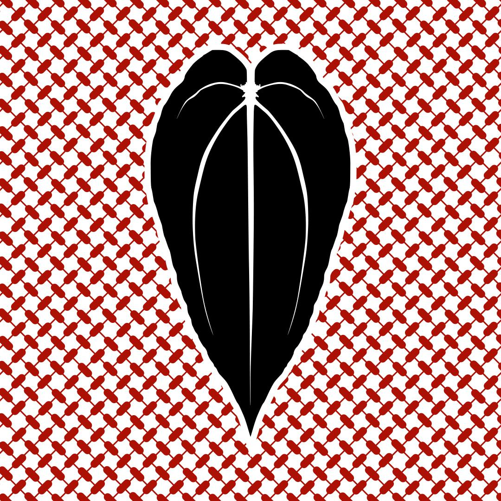
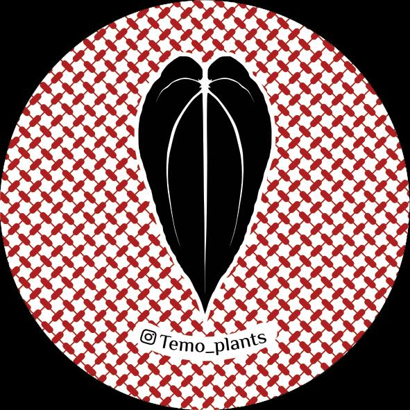

🌿 Rare Plant Collector | 💧 Hydroponics
كل ورقة
تحكي شغف
Alocasia · Anthurium · Hoya 🪴
🇸🇦 Saudi Arabia ✨
Let’s grow something beautiful 🌱

TEMO_PLANTSنباتات نادرة ومميزة
المجموعة المتاحة
جارٍ تحميل النباتات…

Temo_plantsنباتات نادرة · زراعة مائيةInstagram ↗Alocasia · Anthurium · Hoya 🪴
🇸🇦 Saudi Arabia ✨
Let’s grow something beautiful 🌱
